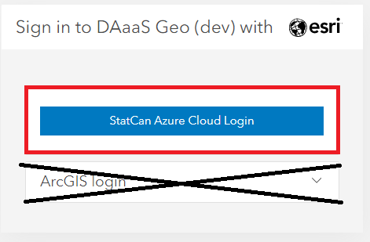

ArcGIS Portal
Enregistrer
Compte infonuagique
-
Visitez le Portail ADS-EAG Enterprise pour vous connecter au Portail ArcGIS Enterprise.
-
Cliquez sur le bouton Connexion à StatCan Azure. 
-
Si votre mot de passe n’a pas été mémorisé par Azure, on vous demandera de le saisir et de le vérifier par téléphone.
-
L’écran suivant s’ouvrira alors :

-
Pour des raisons de sécurité, votre rôle par défaut sera Lecteur seulement. Communiquer avec l’équipe ADS-Géo pour faire modifier vos privilèges d’accès. Pour savoir comment communiquer avec ADS-Géo, consultez la section Contact.
Rôles d’utilisateur
On vous attribuera le rôle d’utilisateur Observateur de projet ou Membre de projet en fonction de vos besoins.
-
Observateur de projet
Afficher des éléments, tels que des cartes, des applications, des scènes et des couches, qui ont été partagés avec le public, l’organisation ou un groupe auquel le membre appartient. Se joindre aux groupes appartenant à l’organisation. Faire glisser des fichiers CSV, texte ou GPX dans Map Viewer Classic (anciennement Map Viewer) pour géocoder des adresses ou des noms de lieux. Obtenir des orientations dans un visualisateur de cartes et des applications. Les membres auxquels est attribué le rôle Observateur de projet ne peuvent pas créer ou partager du contenu, ni effectuer d’analyse. -
Membre de projet
Privilèges de visualisateur de projet, plus la possibilité de créer, de mettre à jour et de supprimer son propre contenu. Les utilisateurs peuvent publier des couches de caractéristiques hébergées, des couches de tuiles hébergées, des couches de scènes hébergées et des couches sur serveur. Partager le contenu avec les groupes désignés. Créer du contenu tel que des cartes (y compris des tâches d’analyse des caractéristiques), des tableaux de bord, des applications et des cartes narratives.
Groupes
Les groupes auxquels vous appartenez sont l’endroit où vous pouvez collaborer avec d’autres utilisateurs qui travaillent sur le même projet ou qui font partie de la même équipe. Dans l’en-tête principal, cliquez sur Groups (groupes). C’est ici que vous pouvez voir les groupes auxquels vous avez été ajouté.
 Cliquez sur le nom du groupe pour voir tout le contenu partagé.
Cliquez sur le nom du groupe pour voir tout le contenu partagé.
Téléchargement/Publication de contenu
Téléchargement de contenu - PRO
Les fichiers de formes et les fichiers des bases de données géographiques sont les fichiers les plus courants qui seront téléchargés sur le portail. Cependant, on peut trouver une liste complète des éléments pris en charge en cliquant sur le point d’interrogation comme il est indiqué dans la figure ci-dessous.
Cliquez sur l’onglet Contenu; ensuite, sous Mon contenu, cliquez sur Ajouter un élément. Sélectionnez Depuis votre ordinateur. Sélectionnez Choisir un fichier, puis accédez au dossier comprimé du contenu que vous souhaitez télécharger. Assurez-vous que le bon type de fichier est sélectionné dans le menu déroulant et que l’option Publier ce fichier en tant que couche hébergée est sélectionnée. Attribuez un titre et des balises au contenu. Cliquez sur Ajouter un élément.
Note : Si vous sélectionnez Publier ce fichier en tant que couche hébergée, le contenu sera également publié en tant que couche hébergée qui pourra être utilisée et partagée entre les membres de votre groupe. Si l’option n’est pas sélectionnée, le fichier lui-même (p. ex. une base de données géographiques) sera téléchargé et pourra être téléchargé par les autres membres du groupe, mais il ne pourra pas être utilisé par les membres du groupe tant qu’il n’aura pas été publié en tant que couche hébergée.

On peut suivre des étapes semblables pour télécharger du contenu par une URL vers une couche ou un document sur le Web, ou une URL vers une application sur le Web. Le contenu peut également être téléchargé directement sur une carte Web en utilisant les mêmes moyens que ceux décrits ci-dessus. Learn More: ArcGIS Portal; Add Items
Publication de contenu - PORTAL
- Les éléments peuvent être publiés directement à partir de vos fichiers, comme il est indiqué dans la section sur le téléchargement de contenu.
- Si le fichier de l’élément est téléchargé directement vers le portail, comme un fichier forme ou une base de données géographiques, l’utilisateur peut publier l’élément manuellement.

- Les éléments peuvent également être importés directement dans une carte Web (voir la section relative aux cartes Web pour obtenir plus de plus amples renseignements) et publiés individuellement sur le portail.

Learn More: ArcGIS Portal; Publishing
Création
Création de cartes Web
Pour créer une carte Web, vous avez deux possibilités ::
- Cliquer sur l’onglet Map (carte) dans le ruban principal OU
- Visiter la page Vue d’ensemble d’une couche de caractéristiques particulière et cliquer sur Open in Map Viewer (ouvrir dans le visualiseur de carte).
Une fois la carte Web ouverte, vous pouvez y ajouter des couches en effectuant une recherche dans Mon contenu, Mes groupes, ou Mon organisation.
Learn More: Démarrer avec Map Viewer – Portail pour ArcGIS –| Documentation pour ArcGIS Enterprise
Création d’applications interactives
Pour créer une application, accédez à l’onglet Contenu (contenu) du ruban principal, puis cliquez sur Mon contenu. Il y a un bouton Créer une application qui vous permettra de travailler avec sept différents types d’applications interactives.

Learn More: Démarrer avec les applications – Portail pour ArcGIS –| Documentation pour ArcGIS Enterprise
Création Enterprise Site
Que signifie un Enterprise Site?
ArcGIS Enterprise Sites permet de créer une expérience de page web personnalisée pour vous aider à partager plus facilement vos produits SIG avec les autres, même s'ils ne sont pas habitués à travailler dans votre SIG. Au lieu d'apprendre à naviguer dans le portail et à accéder aux groupes, les utilisateurs peuvent directement accéder à la page web personnalisée que vous créez pour naviguer dans le contenu qui les concerne. Les utilisateurs auront besoin d'un rôle de Viewer.
Pour demander un site, contactez l'équipe SAD_EAG via le tableau Jira. Comment soumettre une demande technique ou signaler un problème. Veuillez inclure la préférence pour l'URL de votre choix. L'URL sera formatée comme suit: https://geoanalytics.cloud.statcan.ca/portal/apps/sites/#/{VOTRE_URL_CHOISIE}
Avec votre site, deux groupes seront créés, l'un pour les éditeurs et l'autre pour les simples spectateurs. Ces groupes contrôleront l'accès à votre site et les éléments avec lesquels les utilisateurs peuvent interagir.
ESRI utilise un thème personnalisé et une version du système Bootstrap(3) pour la conception de pages. Les utilisateurs qui souhaitent utiliser du HTML personnalisé dans l'application du site doivent se référer à cette ressource: Calcite Bootstrap Theme by ESRI(EN)
ArcGIS Enterprise Python API (interface de programmation d'application)
Connexion
Votre groupe de projet recevra un ID de client lors de l'intégration qui sera utilisé pour se connecter au portail ArcGIS Enterprise. Collez l'ID de client entre les guillemets.
gis = GIS("https://geoanalyticsdev.cloud.statcan.ca/portal", client_id=' ')
print("Successfully logged in as: " + gis.properties.user.username)
La sortie vous redirigera vers une page web où vous pourrez vous connecter au portail en utilisant l'option StatCan Azure Login. Après une connexion réussie, vous recevrez un code pour vous connecter en utilisant SAML. Collez ce code dans la sortie.

Recherche de contenu
# Search for content in your ArcGIS Enterprise instance
query = "my search query" # replace with your search query
items = gis.content.search(query)
# Print out the results of the search
print("Search results for '{}':".format(query))
for item in items:
print("{} - {}".format(item.title, item.url))
Chargement du contenu
# Define the path to the file you want to upload
file_path = "/path/to/your/file"
# Upload the file to your ArcGIS Enterprise instance
item_properties = {"title": "My Uploaded File", "tags": "file, upload"} # replace with your desired item properties
item = gis.content.add(item_properties, data=file_path)
# Print out the URL of the uploaded item
print("Uploaded item URL: {}".format(item.url))
```
###Créer une WebMap
```python
# Create a new web map
webmap_properties = {"title": "My New Web Map", "snippet": "This is my new web map."} # replace with your desired web map properties
webmap = WebMap(webmap_properties)
# Save the web map to your ArcGIS Enterprise instance
webmap_item = webmap.save(item_properties=webmap_properties)
# Print out the URL of the new web map
print("New web map URL: {}".format(webmap_item.url))
Analyse
# Get a reference to the feature layer you want to summarize
layer_url = "https://your-arcgis-enterprise-url.com/server/rest/services/your-service/FeatureServer/0" # replace with your layer URL
layer = gis.content.get(layer_url).layers[0]
# Example: Summarize the data in the feature layer
result_layer = summarize_data(layer, ["field1", "field2"], ["sum(field3)", "avg(field4)"], output_name="Summary Layer") # replace with your field names and summary functions
# Print out the URL of the summarized data
print("Summarized data URL: {}".format(result_layer.url))
En savoir plus sur l'API; ESRI Documentation(en anglais seulement)
Travailler avec des vesions multiples (DEV>PROD)
anglais seulement
Ce qui suit utilise un outil développé par des citoyens, et n'est disponible qu'en anglais. Les instructions sont fournies en anglais afin de correspondre à l'outil de l'assistant.
Remplacer une couche dans une carte Web existante (en anglais seulement)
Il peut y avoir un scénario où vous voulez remplacer une couche dans une carte avec une version mise à jour ou un jeu de données de remplacement. Il existe plusieurs façons d'accomplir cela, l'une des méthodes les plus simples est d'utiliser ArcGIS Online Assistant (en anglais seulement)
Procéder avec prudence.!
Changer une couche dans une carte existante peut avoir des conséquences imprévues. Les widgets et les contrôles de l'application liés à la carte peuvent se casser et nécessiter une reconfiguration. S'assurer que les noms de couche et les en-têtes de table correspondent aux anciennes versions aidera à maintenir la compatibilité, mais il n'y a aucune garantie.
Les risques incluent : la corruption de contenu, la perte d'accès aux éléments, la rupture des applications construites sur la carte.
-
Log in to Portal for ArgGIS

-
Enter the Portal URL https://geoanalytics.cloud.statcan.ca/portal ,and, your APP ID (API Key) from the ArcGIS Portal

-
A pop-up window will appear, select StatCan Azure Cloud Login

-
In the Assistant Home page, Select the folder where you map is saved on the Portal

-
Select I want to, then Update the URLs of Services in a Web Map

6.In the Find file, enter the URL of the old layer you want to replace. In replace enter the new URL. Scroll down and select Update Then wait for the Success message.

??? info Où trouver l'URL du service d'entités"
L'URL se trouve dans le portail, sur la page de présentation des Feature Services:

Les données de votre carte reflèteront désormais le nouveau service. Vous devrez peut-être modifier le Nom de la couche sur votre carte, car il reflétera la couche d'origine.
Remplacement d'une carte web dans une application web existante.(en anglais seulement)
Procéder avec prudence.
Changer une carte dans une application web existante peut avoir des conséquences imprévues. Les widgets et les contrôles peuvent se casser et nécessiter une reconfiguration. S'assurer que les noms de couches et les en-têtes de table correspondent aux anciennes versions aidera à maintenir la compatibilité, mais il n'y a aucune garantie. SAD-EAG recommande de faire des expériences sur une application de démonstration/copiée en premier lieu.
Les risques incluent : la corruption du contenu, la perte d'accès aux éléments et la rupture des applications construites sur la carte.
Il peut arriver que vous souhaitiez remplacer une carte Web par une nouvelle carte dans une application Web déjà construite. Nous vous guiderons à travers le processus en utilisant l'Assistant ArcGIS Online. Nous utiliserons le même outil Assistant ArcGIS Online que précédemment, mais avec un flux de travail différent.
-
Log in to Portal for ArgGIS
-
Enter the Portal URL https://geoanalytics.cloud.statcan.ca/portal ,and, your APP ID (API Key) from the ArcGIS Portal
-
A pop-up window will appear, select StatCan Azure Cloud Login
-
In the Assistant Home page, Select the folder where you map is saved on the Portal
-
From the I want to... button, select View an Item's JSON, then select the desired app from the highlighted list. The JSON data will appear on the right.

-
Scroll down on the JSON data pane, to the Data category, and Select the Edit icon. The data tile will turn to dark-mode, signifying it is in edit mode.

-
In the data tile, locate the map attribute, and replace the itemID field with the new maps ID.

Comment trouver une carte d'identité
L'identifiant de la carte peut être obtenu en visitant la page d'aperçu de la carte et en le copiant à partir de l'URL suivante

-
Scroll up to the beginning of the data tile and select Save.
Confirm the changes in your app, and reconfigure widgets as needed.
Cloning with the API
Procéder avec prudence: CLONE vs COPY
Cette méthode de clonage ne fonctionne pas toujours. Certains ensembles de données, couches, éléments, etc., seront COPIÉS au lieu d'être CLONÉS. Les copies font référence à l'élément d'origine, prêtez une attention particulière à l'ID de l'élément. Cela ne fonctionnera pas pour les "couches d'images de carte".
# Connect to the source portal
src_gis = GIS("https://geoanalytics.cloud.statcan.ca/portal", client_id='')
# Connect to the destination portal
dest_gis = GIS("https://geoanalytics.cloud.statcan.ca/portal", client_id='')
# Clone the web app and its linked resources
web_map_item = src_gis.content.get("web_map_item_id")
cloned_item = web_map_item.clone(portal=dest_gis, folder="folder_name")
# Loop through the cloned item's dependent items and clone them too
for dependency in cloned_item.dependencies:
dependency_item = src_gis.content.get(dependency["id"])
cloned_dependency = dependency_item.clone(portal=dest_gis, folder="folder_name")
# Update the cloned item's dependency with the new item ID
cloned_item.update_item_dependencies(dependency_item.id, cloned_dependency.id)
print("Web app and its linked resources cloned successfully!")
Pratiques exemplaires
Tags
- Les éléments ne doivent être partagés qu’avec votre groupe. Abstenez-vous de les partager au sein de l’entreprise ou avec le public.
- Utilisez de nombreux mots-clés appropriés – c’est ainsi que la plupart des gens trouveront votre travail.
- Utilisez des mots-clés communs pour les éléments connexes.
Gestion du contenu
-
Organisez le contenu : Utilisez un système structuré et logique pour organiser le contenu du portail. Cela peut inclure la création de dossiers, de groupes et de catégories pour faciliter la recherche et l'accès des utilisateurs au contenu.
-
Utilisez des métadonnées : Incluez des métadonnées complètes pour tous les éléments du portail afin de faciliter la découverte, la compréhension et l'utilisation du contenu par les utilisateurs.
-
Utilisez une convention de nommage
- Utilisez le "versionnement sémantique".
- Un numéro de version en trois parties (Major.Minor.Patch)
- ex : Ma carte v1.2.4, EV_Viewer_App DEV v0.0.2
- Ajoutez un attribut Dernière mise à jour: aux détails de la page de présentation de l'élément.
- Utilisez le "versionnement sémantique".